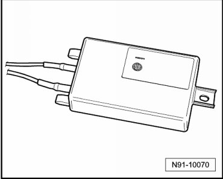
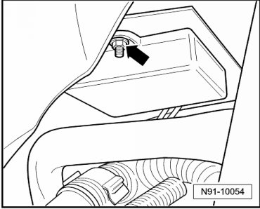
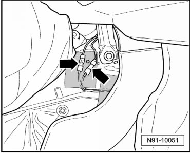
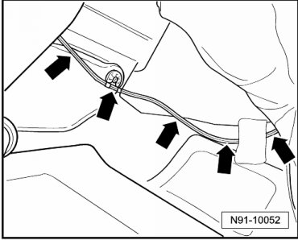
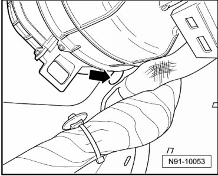
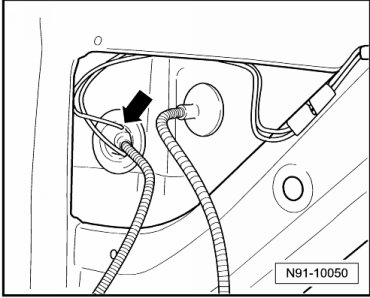

Navigation and Telephone Antenna
Navigation and Telephone Antenna

• The navigation and telephone antenna is installed under the right front fender. The wiring connections to the antenna cannot be disconnected. The first separable connector is located on the center console in the passenger footwell, that is, substantial assembly work is necessary to remove and install the antenna.
Removing
- Remove right front seat.
- Remove right front seat frame.
- Remove center console.
- Remove lower instrument panel trim. Refer to --> Dashboard / Instrument Panel
- Remove right front wheel housing trim. Refer to --> Fender
- Remove windshield washer system reservoir in right front wheel housing.
- Remove right headlamp.
- Remove mounting nut on antenna - arrow -.

- Remove floor covering in right front footwell and fold it over center tunnel to left footwell side.
• Because the driver's and passenger's side floor covering in one piece, it cannot be remove from the vehicle during this assembly work.
- Release both antenna wiring connectors on side of center console - arrows -.

• Depending on vehicle equipment with telephone and/or navigation, there may be only one connector here.
- Loosen antenna wiring in footwell - arrows -.

- Loosen antenna wiring up to opening in A-pillar - arrow -.

- Remove antenna wiring on wheel housing side through opening in A-pillar - arrow -.

- Loosen antenna wiring from clips in wheel housing and remove antenna together with wiring.
Installing
Install in reverse order of removal.
When routing antenna wiring, ensure that it is not damaged and does not cause rattling noises in the vehicle.